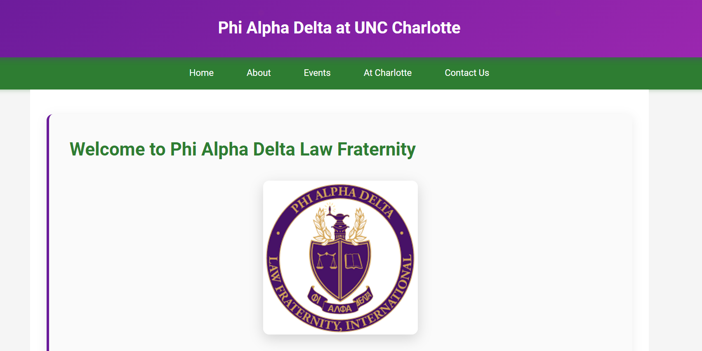

Peer Evaluation: Bhatewara, Harsh

Website Checklist (CRAP)
- Contrast: Their client website; remains consistent in their color scheme of Phi Delta. The layout is intuitive, and the typography blends well with the colors chosen along with its linear gradient colors.
- Repetition: The website spectacularly avoids unnecessary repetition, ensuring that each section serves a unique purpose.
- Alignment: The content of their header, body, and footer is very sophisticated in presentation and organization.
- Proximity: There is little clutter, and elements are grouped together perfectly. What really stands out is their inventory page on their itis3135 site!
Overall Impression
- Start: Fixing CSS Error: A specific CSS error found on his client homepage.
- Stop: The CSS Error: There is a minor CSS error on their client site related to the introduction of PAD (Phi Alpha Delta Law Fraternity).
- Continue: Debugging: Overall, Harsh's website is amazingly well-designed to put it simply. It effectively communicates their background and projects with passion that I haven't seen anywhere else. With some adjustments to address the warning errors, it truly could stand out far more!